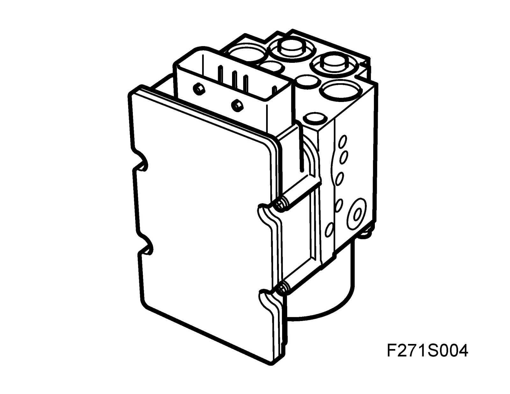
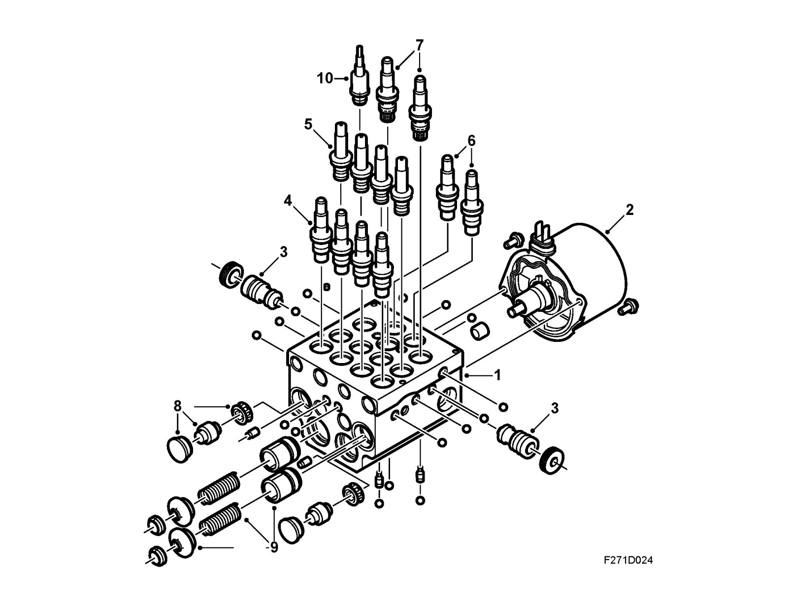
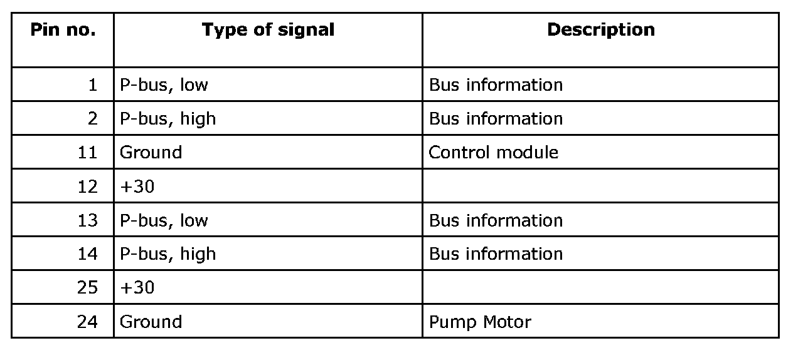
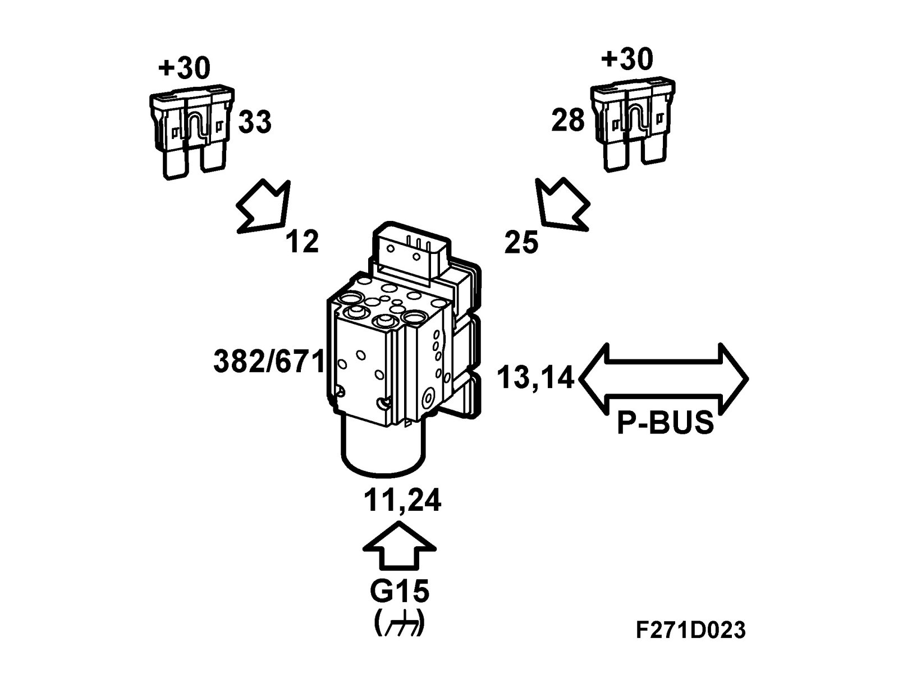

Control Module, ESP (671), Including Hydraulic Unit
Control module, ESP (671), including hydraulic unitLocation
ESP control module (671)

Main use
The control module continually calculates wheel speed for all four wheels and regulates by applying the brakes or sending an engine torque limitation request if there is there is a difference between wheel speeds or any limit value is exceeded. The hydraulic unit provides brake pressure to the wheel brakes and holds or evacuates brake fluid as necessary with internal unit valves.
Type
The control module contains
- A main processor which regulates ABS function and some diagnostics monitoring.
- A slave processor which regulates TCS function, parts of the diagnostics monitoring, continuous monitoring of the main processor as well as compares the main processor wheel speed calculation.
- Field Effect Transistors (FET) which engage the pump motor and the valves (on and off).
- A relay which works like a safety switch and cuts the voltage to the valves if a larger system fault is detected.
Valve block
The valve block is a constituent part of the hydraulic unit. It regulates the brake pressure to the wheels when braking with ABS and during TCS and ESP modulation with braking. The valve block contains 12 solenoid valves: four inlet valves, four outlet valves, two pressure increase valves and two pressure relief valves. This means there are one inlet valve and one outlet valve per wheel, and one pressure increase valve and one pressure relief valve per front wheel.
In rest position, the inlet valve is open and the outlet valve closed.
In the valve block is an accumulator chamber and a pressure chamber for each brake circuit. The accumulator chamber is located between the outlet valve and the pump and is used to accumulate brake fluid before the pump starts.
The pressure chamber is located between the pump and the inlet valve and is used to dampen noise and pressure surges when the pump is operating.
The pressure increase valve is normally closed but is opened by the control module to supply the pump with brake fluid for building up pressure while TCS or ESP modulation is active.
The pressure relief valve is normally open but will close while pressure is built up and is being maintained and open again for pressure relief in order to hold a certain pressure calculated by the control module to the relevant wheel while TCS modulation is active.
In the valve block are 2 check valves for the TCS. If the driver brakes while TCS or ESP modulation is in progress, TCS or ESP with brake application will cease and the brake function will be selected.
During the delay that may arise, the check valve that is located in parallel with the pressure relief valve will prevent the brake function being affected by leading the brake pressure to the wheel.
The ESP unit contains a brake pressure sensor that measures the input brake pressure from the master cylinder primary circuit. This information is used by the control module to apply the correct brake pressure while ESP modulation is active. See Brake pressure.

1 Valve body
2 Motor
3 Pump
4 Inlet valve
5 Outlet valve
6 Pressure relief valve
7 Pressure increase valve
8 Pressure chamber
9 Accumulator chamber
10 Brake pressure sensor
Power supply, ground and bus communication

Wiring diagram
^ Overview

^ Power supply +30, +15 and ground

^ Speed signal